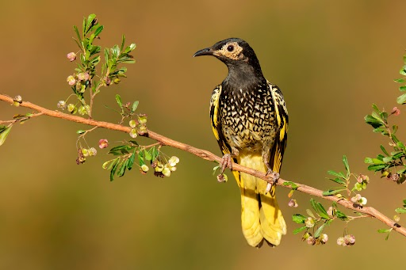

What are Avian Animals
- They are move well known as 'birds'
- Vertebrate animals adapted with the ability to fly
What are Avian Animals
As a result it places those threatened Avian animal species on the list at the risk of extinction as of 2022
(Australian Conservation Foundation, 2022)
Choropleth Map would also be used to visualise habitat destruction throughout different states of Australia in order to deduce where most approval of habitat destruction take place
It would also be used to deduce the relationship between number of approvals and hectares being approved to be destroyed
It is also the main cause of habitat destruction and numerous habitats of threatened species Avian animals were destroyed to make way for Mining purposes